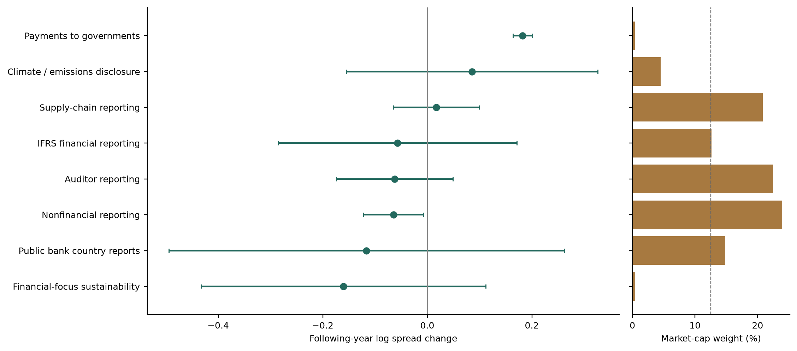
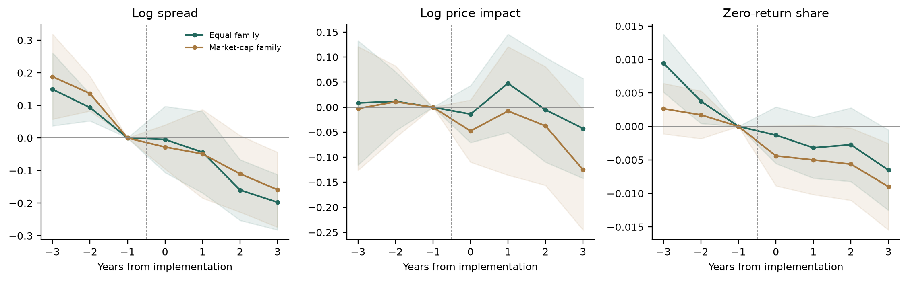
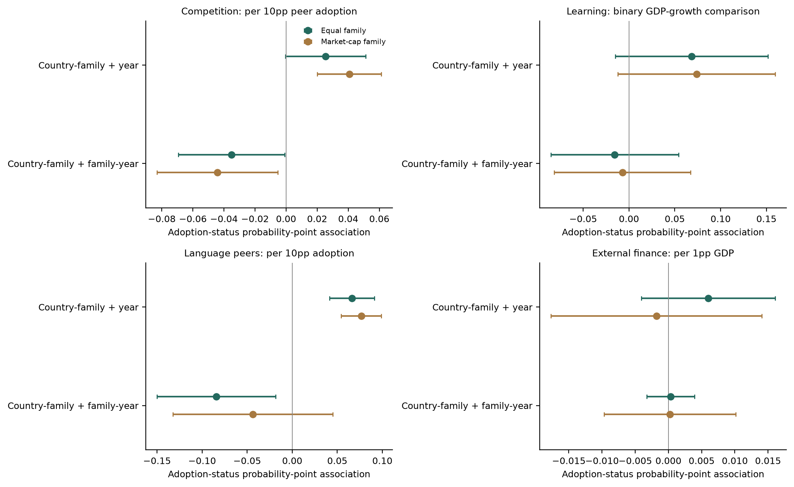
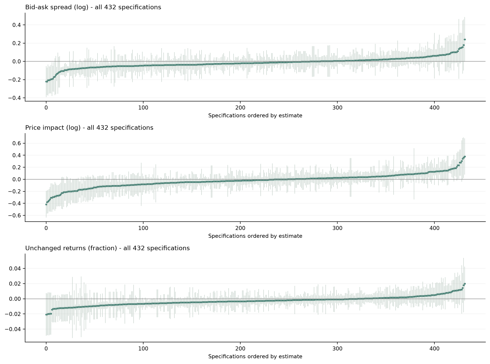

Disclosure regulation and liquidity
Do disclosure requirements improve stock-market liquidity? How do they spread across countries?
Sample and data
| Market data | Datastream, 2000–2025. 90 jurisdictions, 99,100 company records and 1,055,142 stock-year observations. |
|---|---|
| Liquidity measures | Quoted spread, price impact and zero-return share. All three are available for 636,960 stock-years in 86 jurisdictions. |
| Disclosure rules | Ten identified public-disclosure families. Eight support following-year comparisons; six support years 1–3. Confidential tax reporting is a separate comparison. |
| Policy sources | 482 documented country-family histories in the wider register. Legal sources distinguish covered periods, implementation and public information. Historical gaps remain. |
| Country data | GDP, income, trade, regulatory quality and financial development. Diffusion tests add trade peers, geographic peers, shared languages and external finance. |
We compare changes within the same companies around each policy’s implementation, then aggregate by country and regulation family. Comparisons use countries with a documented later implementation date. Unknown histories and already-treated countries do not become controls.
Which disclosure rules?
| Family | Audience | Recorded countries | Supported adopters | Public-pool cap weight |
|---|---|---|---|---|
| Auditor reporting | Public | 36 | 20 | 22.4% |
| Public bank country reports | Public | 28 | 14 | 14.8% |
| Public multinational country reports | Public | 28 | - | - |
| Climate / emissions disclosure | Public | 6 | 2 | 4.5% |
| Nonfinancial reporting | Public | 37 | 22 | 23.9% |
| Payments to governments | Public | 9 | 1 | 0.4% |
| IFRS financial reporting | Public | 36 | 20 | 12.7% |
| Supply-chain reporting | Public | 8 | 4 | 20.8% |
| Financial-focus sustainability | Public | 6 | 1 | 0.4% |
| Electronic financial reporting | Public | 4 | - | - |
| Confidential tax country reports | Tax authority | 120 | 42 | - |
The public pool includes financial reporting, auditor reporting, nonfinancial reporting, climate disclosure, public country reports, payments to governments, supply-chain reporting and electronic reporting. This is a comparison across identified families, not a census of every disclosure law.
1. Liquidity
| Outcome | Families | Equal family Estimate [95% interval] | Market-cap family Estimate [95% interval] |
|---|---|---|---|
| Following year Spread | 8 | -0.022 [-0.088, 0.044] | -0.047 [-0.116, 0.023] |
| Following year Price impact | 8 | +0.031 [-0.055, 0.118] | -0.035 [-0.154, 0.083] |
| Following year Zero-return share | 8 | -0.0061 [-0.0111, -0.0011] | -0.0026 [-0.0102, 0.0051] |
| Years 1–3 Spread | 6 | -0.075 [-0.152, 0.001] | -0.084 [-0.185, 0.017] |
| Years 1–3 Price impact | 6 | +0.061 [-0.021, 0.144] | -0.040 [-0.134, 0.054] |
| Years 1–3 Zero-return share | 6 | -0.0050 [-0.0099, -0.0001] | -0.0071 [-0.0136, -0.0005] |
Public-disclosure spread estimates imply about 2.2% lower spreads under equal family weights and 4.5% under market-cap family weights in the following year. Both intervals include zero. The longer-window spread estimates are also negative, but use a narrower sample. Together with the other outcomes and pre-policy patterns, these results do not yet establish a general causal liquidity improvement.
GDP weights combine countries within each family. Equal family weights describe the typical supported family; market-cap weights put more weight on larger sampled market exposures. Both use the same underlying family estimates. A company can be exposed to several policies.
Results across disclosure families

The average combines different reporting requirements. Nonfinancial reporting has a negative spread estimate across 22 adopting jurisdictions. Other family estimates differ in direction and precision. The chart shows all eight supported families; unsupported families receive no estimated effect.
Before and after implementation

The fixed seven-year sample covers five families. Spread differences are already visible before implementation, so the post-policy decline alone cannot identify an effect of the rules. Matching and domestic-control comparisons are in Tables 4 and 11.
Public and confidential reporting
Public reports can reach investors directly. Confidential country-by-country tax reports go to tax authorities and may affect enforcement, tax costs or investment. They can matter for markets through those channels, but measure a different information change. Table 3 reports the combined pool; Table 6 reports both audiences and their formal difference.
2. Policy diffusion

In the separate equal-family model, a ten-percentage-point increase in prior language-peer adoption is associated with a 6.6-point higher probability that a policy is in place. The association survives the stated multiple-test adjustment with common year effects. With family-specific year effects, its estimate changes to −8.4 points and no longer survives that adjustment.
This comparison separates shared adoption waves from possible peer transmission. The evidence does not yet establish emulation, learning or competition as a global causal mechanism. First-adoption timing, both weights and all failed models remain in Tables 13–15.
Country-family effects account for persistent differences in each country’s policy regime. Family-year effects also account for international waves specific to a regulation family. Predictor units differ across the four panels.
Paper and regression tables
Download paper ↗Tables and code ↗Manuscript ↗
31 pages, 15 tables and three figures. Twelve tables contain regression estimates, including four cross-sectional tables. Table 13 records the support and estimation failures of the reference-style logit; it is not counted as an estimated regression table.
Dube–Zhu writing and argument notes · 34-paper literature matrix · Analysis choices · Numerical validation · Next research steps
Table 1. Sample and liquidity measures
| Measure | Stock-years | Mean | SD | P25 | Median | P75 |
|---|---|---|---|---|---|---|
| Log spread | 662,316 | -5.0736 | 1.4361 | -6.1280 | -5.0468 | -3.9797 |
| Log price impact | 755,877 | 1.5158 | 3.0788 | -0.8076 | 1.6031 | 3.8053 |
| Zero-return share | 795,229 | 0.1194 | 0.1529 | 0.0207 | 0.0643 | 0.1623 |
Datastream security-year inventory: 1,055,142 observations, 99,100 vendor company records and 90 jurisdictions, 2000-2025. All three measures are jointly available for 636,960 stock-years in 86 jurisdictions. Estimation uses fixed company cohorts and smaller documented country comparisons. Higher values indicate less liquidity. Logs and fractions are not percentage changes.
Table 2. Disclosure families and information audiences
| Family | Audience | Recorded countries | Supported adopters | Public-pool cap weight |
|---|---|---|---|---|
| Auditor reporting | Public | 36 | 20 | 22.4% |
| Public bank country reports | Public | 28 | 14 | 14.8% |
| Public multinational country reports | Public | 28 | - | - |
| Climate / emissions disclosure | Public | 6 | 2 | 4.5% |
| Nonfinancial reporting | Public | 37 | 22 | 23.9% |
| Payments to governments | Public | 9 | 1 | 0.4% |
| IFRS financial reporting | Public | 36 | 20 | 12.7% |
| Supply-chain reporting | Public | 8 | 4 | 20.8% |
| Financial-focus sustainability | Public | 6 | 1 | 0.4% |
| Electronic financial reporting | Public | 4 | - | - |
| Confidential tax country reports | Tax authority | 120 | 42 | - |
The main pool comprises ten identified public-disclosure families; eight support following-year comparisons and six support years 1-3. Confidential tax reporting is shown separately and enters a combined disclosure sensitivity. Recorded country counts include implemented phases through 2025 across the wider source register, not only countries with market data. Dashes denote unsupported estimates or exclusion from the public-only weight. The calendar is not a census of all historical disclosure laws; broader governance and register categories remain in the 17-family appendix.
Table 3. Does disclosure regulation generally change liquidity?
| Outcome and coefficient | Families | Equal family Coefficient (SE), q | Market-cap family Coefficient (SE), q |
|---|---|---|---|
| Public disclosures Year 1: Log spread | 8 | -0.022 (0.034) q=1.000 | -0.047 (0.035) q=1.000 |
| Public disclosures Year 1: Log price impact | 8 | +0.031 (0.044) q=1.000 | -0.035 (0.060) q=1.000 |
| Public disclosures Year 1: Zero-return share | 8 | -0.0061 (0.0025) q=0.161 | -0.0026 (0.0039) q=1.000 |
| Public disclosures Years 1-3: Log spread | 6 | -0.075 (0.039) q=0.378 | -0.084 (0.052) q=0.590 |
| Public disclosures Years 1-3: Log price impact | 6 | +0.061 (0.042) q=1.000 | -0.040 (0.048) q=1.000 |
| Public disclosures Years 1-3: Zero-return share | 6 | -0.0050 (0.0025) q=0.378 | -0.0071 (0.0034) q=0.345 |
| Public + confidential Year 1: Log spread | 9 | -0.009 (0.032) | +0.016 (0.041) |
| Public + confidential Year 1: Log price impact | 9 | +0.021 (0.048) | -0.045 (0.098) |
| Public + confidential Year 1: Zero-return share | 9 | -0.0044 (0.0027) | +0.0025 (0.0057) |
| Public + confidential Years 1-3: Log spread | 7 | -0.031 (0.046) | +0.086 (0.113) |
| Public + confidential Years 1-3: Log price impact | 7 | +0.092 (0.059) | +0.126 (0.140) |
| Public + confidential Years 1-3: Zero-return share | 7 | -0.0043 (0.0032) | -0.0034 (0.0086) |
Primary pool: public disclosures. Secondary pool: public plus confidential disclosures. Country-cohort comparisons exclude already-treated countries and unknown policy histories. Baseline is year -1; outcomes are year 1 or the mean of years 1-3. Parentheses are conditional country standard errors. Public-pool q values adjust over its 12 principal tests; the separate 36-cell scope correction is in the accompanying data. Cohort and family weights are positive and normalised. A common average is a specified weighted target, not a claim that each law has the same effect.
Table 4. Country controls on identical samples
| Outcome and coefficient | Families / country-cohort rows | Equal family Coefficient (SE), q | Market-cap family Coefficient (SE), q |
|---|---|---|---|
| No controls Log spread Treatment | 5 / 283 | -0.063 (0.045) q=1.000 | -0.066 (0.039) q=1.000 |
| No controls Log price impact Treatment | 5 / 283 | -0.050 (0.083) q=1.000 | -0.011 (0.069) q=1.000 |
| No controls Zero-return share Treatment | 5 / 283 | -0.0053 (0.0045) q=1.000 | -0.0011 (0.0046) q=1.000 |
| Prior domestic controls Log spread Treatment | 5 / 283 | -0.040 (0.068) q=1.000 | -0.052 (0.057) q=1.000 |
| Prior domestic controls Log price impact Treatment | 5 / 283 | -0.295 (0.107) q=0.695 | -0.194 (0.103) q=1.000 |
| Prior domestic controls Zero-return share Treatment | 5 / 283 | -0.0121 (0.0091) q=1.000 | -0.0060 (0.0093) q=1.000 |
Country-cohort WLS, prior-year GDP within families. Parentheses are conditional country-influence standard errors; q is Holm-adjusted p across all 108 newly declared focal coefficients, including audience diagnostics. Each weighting pair uses identical family estimates. Family and country support may differ across rows. These are exploratory comparisons, not policy-assignment or causal-mechanism inference. The paired regressions use the same eligible country rows and supported cohorts. Controls are prior log GDP per capita, GDP growth and trade/GDP, standardised within cohort. Each cohort regression includes an intercept; sample restriction and regression adjustment are distinct from the primary estimate.
Table 5. Liquidity estimates by public-disclosure family
| Family | Adopting countries | Log spread Coefficient (SE) | Log price impact Coefficient (SE) | Zero-return share Coefficient (SE) |
|---|---|---|---|---|
| Auditor reporting | 20 | -0.0624 (0.0568) | +0.0585 (0.0830) | -0.0131 (0.0066) |
| Public bank country reports | 14 | -0.1163 (0.1930) | +0.1570 (0.2201) | -0.0098 (0.0054) |
| Climate / emissions disclosure | 2 | +0.0856 (0.1228) | -0.0167 (0.0806) | -0.0074 (0.0071) |
| Nonfinancial reporting | 22 | -0.0647 (0.0293) | +0.0331 (0.0944) | +0.0305 (0.0118) |
| Payments to governments | 1 | +0.1822 (0.0094) | +0.5297 (0.0053) | -0.0164 (0.0012) |
| IFRS financial reporting | 20 | -0.0570 (0.1164) | +0.1201 (0.3486) | -0.0235 (0.0115) |
| Supply-chain reporting | 4 | +0.0170 (0.0418) | -0.4576 (0.0620) | -0.0102 (0.0061) |
| Financial-focus sustainability | 1 | -0.1603 (0.1389) | -0.1743 (0.1496) | +0.0011 (0.0060) |
All eight supported public-disclosure families are reported, including positive and negative estimates. GDP weights within each family. Estimates compare year 1 with year -1, using fixed company cohorts. Country-influence uncertainty is conditional on legal histories and does not capture common supranational assignment. These are family estimates underlying the primary pool, not eight independent confirmations.
Table 6. Does the audience for disclosure matter?
| Outcome and coefficient | Families / country-cohort rows | Equal family Coefficient (SE), q | Market-cap family Coefficient (SE), q |
|---|---|---|---|
| Public disclosure Log spread | 8 | -0.022 (0.034) q=1.000 | -0.047 (0.035) q=1.000 |
| Public disclosure Log price impact | 8 | +0.031 (0.044) q=1.000 | -0.035 (0.060) q=1.000 |
| Public disclosure Zero-return share | 8 | -0.0061 (0.0025) q=1.000 | -0.0026 (0.0039) q=1.000 |
| Confidential tax Log spread | 1 | +0.099 (0.077) q=1.000 | +0.099 (0.077) q=1.000 |
| Confidential tax Log price impact | 1 | -0.057 (0.202) q=1.000 | -0.057 (0.202) q=1.000 |
| Confidential tax Zero-return share | 1 | +0.0093 (0.0113) q=1.000 | +0.0093 (0.0113) q=1.000 |
| Other rules Log spread | 4 | +0.041 (0.020) q=1.000 | +0.033 (0.038) q=1.000 |
| Other rules Log price impact | 4 | +0.039 (0.053) q=1.000 | +0.079 (0.074) q=1.000 |
| Other rules Zero-return share | 4 | +0.0030 (0.0030) q=1.000 | +0.0099 (0.0066) q=1.000 |
| Public minus confidential Log spread | 9 | -0.121 (0.080) q=1.000 | -0.145 (0.081) q=1.000 |
| Public minus confidential Log price impact | 9 | +0.088 (0.199) q=1.000 | +0.022 (0.202) q=1.000 |
| Public minus confidential Zero-return share | 9 | -0.0154 (0.0113) q=1.000 | -0.0118 (0.0112) q=1.000 |
Country-cohort WLS, prior-year GDP within families. Parentheses are conditional country-influence standard errors; q is Holm-adjusted p across all 108 newly declared focal coefficients, including audience diagnostics. Each weighting pair uses identical family estimates. Family and country support may differ across rows. These are exploratory comparisons, not policy-assignment or causal-mechanism inference. The public-minus-confidential row is a formal difference using shared country covariance, not a comparison of significance labels. Other rules refers to the four supported nonheadline families in the wider registry. Families differ in legal content, scope and implementation periods, so these contrasts are not randomised audience effects. Confidential reporting can have indirect real and market effects and is not a negative-control outcome.
Table 7. Cross section: prior market illiquidity
| Outcome and coefficient | Families / country-cohort rows | Equal family Coefficient (SE), q | Market-cap family Coefficient (SE), q |
|---|---|---|---|
Log spread Treatment at mean | 2 / 69 | -0.091 (0.152) q=1.000 | -0.252 (0.185) q=1.000 |
Log spread Treatment x moderator | 2 / 69 | -0.065 (0.116) q=1.000 | -0.451 (0.269) q=1.000 |
Log price impact Treatment at mean | 2 / 69 | +0.196 (0.099) q=1.000 | +0.054 (0.168) q=1.000 |
Log price impact Treatment x moderator | 2 / 69 | +0.174 (0.128) q=1.000 | -0.020 (0.216) q=1.000 |
Zero-return share Treatment at mean | 2 / 69 | -0.0061 (0.0044) q=1.000 | -0.0102 (0.0062) q=1.000 |
Zero-return share Treatment x moderator | 2 / 69 | -0.0044 (0.0043) q=1.000 | -0.0082 (0.0059) q=1.000 |
Country-cohort WLS, prior-year GDP within families. Parentheses are conditional country-influence standard errors; q is Holm-adjusted p across all 108 newly declared focal coefficients, including audience diagnostics. Each weighting pair uses identical family estimates. Family and country support may differ across rows. These are exploratory comparisons, not policy-assignment or causal-mechanism inference. Each cohort regression includes treatment, the centred moderator and their interaction. Moderator is measured in year -1 and scaled by the unweighted eligible-country standard deviation. At least two adopting and six comparison countries, full rank and three residual degrees of freedom are required. The main treatment coefficient is evaluated at the cohort mean moderator. Prior illiquidity can reflect mean reversion; regulatory quality is not policy-specific enforcement; market capitalisation/GDP is financial development, not issuer eligibility.
Table 8. Cross section: regulatory quality
| Outcome and coefficient | Families / country-cohort rows | Equal family Coefficient (SE), q | Market-cap family Coefficient (SE), q |
|---|---|---|---|
Log spread Treatment at mean | 2 / 69 | -0.169 (0.330) q=1.000 | -0.253 (0.363) q=1.000 |
Log spread Treatment x moderator | 2 / 69 | -0.054 (0.275) q=1.000 | +0.086 (0.318) q=1.000 |
Log price impact Treatment at mean | 2 / 69 | -1.750 (0.106) q<0.001 | -0.396 (0.180) q=1.000 |
Log price impact Treatment x moderator | 2 / 69 | -1.312 (0.125) q<0.001 | -0.507 (0.213) q=1.000 |
Zero-return share Treatment at mean | 2 / 69 | -0.0608 (0.0052) q<0.001 | -0.0243 (0.0071) q=0.121 |
Zero-return share Treatment x moderator | 2 / 69 | -0.0360 (0.0063) q<0.001 | -0.0122 (0.0075) q=1.000 |
Country-cohort WLS, prior-year GDP within families. Parentheses are conditional country-influence standard errors; q is Holm-adjusted p across all 108 newly declared focal coefficients, including audience diagnostics. Each weighting pair uses identical family estimates. Family and country support may differ across rows. These are exploratory comparisons, not policy-assignment or causal-mechanism inference. Each cohort regression includes treatment, the centred moderator and their interaction. Moderator is measured in year -1 and scaled by the unweighted eligible-country standard deviation. At least two adopting and six comparison countries, full rank and three residual degrees of freedom are required. The main treatment coefficient is evaluated at the cohort mean moderator. Prior illiquidity can reflect mean reversion; regulatory quality is not policy-specific enforcement; market capitalisation/GDP is financial development, not issuer eligibility.
Table 9. Cross section: financial development
| Outcome and coefficient | Families / country-cohort rows | Equal family Coefficient (SE), q | Market-cap family Coefficient (SE), q |
|---|---|---|---|
Log spread Treatment at mean | 2 / 61 | +0.098 (0.224) q=1.000 | -0.081 (0.225) q=1.000 |
Log spread Treatment x moderator | 2 / 61 | -0.014 (0.240) q=1.000 | -0.255 (0.384) q=1.000 |
Log price impact Treatment at mean | 2 / 61 | +0.932 (0.111) q<0.001 | +0.405 (0.183) q=1.000 |
Log price impact Treatment x moderator | 2 / 61 | +2.485 (0.163) q<0.001 | +0.699 (0.283) q=1.000 |
Zero-return share Treatment at mean | 2 / 61 | +0.0121 (0.0041) q=0.435 | -0.0032 (0.0061) q=1.000 |
Zero-return share Treatment x moderator | 2 / 61 | +0.0652 (0.0099) q<0.001 | +0.0166 (0.0166) q=1.000 |
Country-cohort WLS, prior-year GDP within families. Parentheses are conditional country-influence standard errors; q is Holm-adjusted p across all 108 newly declared focal coefficients, including audience diagnostics. Each weighting pair uses identical family estimates. Family and country support may differ across rows. These are exploratory comparisons, not policy-assignment or causal-mechanism inference. Each cohort regression includes treatment, the centred moderator and their interaction. Moderator is measured in year -1 and scaled by the unweighted eligible-country standard deviation. At least two adopting and six comparison countries, full rank and three residual degrees of freedom are required. The main treatment coefficient is evaluated at the cohort mean moderator. Prior illiquidity can reflect mean reversion; regulatory quality is not policy-specific enforcement; market capitalisation/GDP is financial development, not issuer eligibility.
Table 10. Cross sections: income and international openness
| Outcome and coefficient | Families / country-cohort rows | Equal family Coefficient (SE), q | Market-cap family Coefficient (SE), q |
|---|---|---|---|
| Log GDP per capita Log spread Treatment at mean | 2 / 69 | -0.293 (0.480) q=1.000 | -0.525 (0.678) q=1.000 |
| Log GDP per capita Log spread Treatment x moderator | 2 / 69 | +0.391 (0.462) q=1.000 | +0.573 (0.770) q=1.000 |
| Log GDP per capita Log price impact Treatment at mean | 2 / 69 | -0.544 (0.149) q=0.062 | +0.067 (0.243) q=1.000 |
| Log GDP per capita Log price impact Treatment x moderator | 2 / 69 | -0.603 (0.146) q=0.014 | -0.429 (0.241) q=1.000 |
| Log GDP per capita Zero-return share Treatment at mean | 2 / 69 | -0.0288 (0.0081) q=0.078 | -0.0130 (0.0119) q=1.000 |
| Log GDP per capita Zero-return share Treatment x moderator | 2 / 69 | -0.0141 (0.0099) q=1.000 | -0.0081 (0.0143) q=1.000 |
| Trade/GDP Log spread Treatment at mean | 2 / 68 | +0.368 (0.164) q=1.000 | +0.029 (0.149) q=1.000 |
| Trade/GDP Log spread Treatment x moderator | 2 / 68 | +0.532 (0.210) q=1.000 | +0.261 (0.254) q=1.000 |
| Trade/GDP Log price impact Treatment at mean | 2 / 68 | +3.707 (0.105) q<0.001 | +1.093 (0.179) q<0.001 |
| Trade/GDP Log price impact Treatment x moderator | 2 / 68 | +5.608 (0.065) q<0.001 | +1.456 (0.117) q<0.001 |
| Trade/GDP Zero-return share Treatment at mean | 2 / 68 | +0.0905 (0.0032) q<0.001 | +0.0194 (0.0046) q=0.010 |
| Trade/GDP Zero-return share Treatment x moderator | 2 / 68 | +0.1575 (0.0050) q<0.001 | +0.0463 (0.0077) q<0.001 |
Country-cohort WLS, prior-year GDP within families. Parentheses are conditional country-influence standard errors; q is Holm-adjusted p across all 108 newly declared focal coefficients, including audience diagnostics. Each weighting pair uses identical family estimates. Family and country support may differ across rows. These are exploratory comparisons, not policy-assignment or causal-mechanism inference. Income and openness enter separate interaction regressions. Each includes the moderator main effect. Timing, scaling and support requirements are the same as Tables 7-9. These country moderators cannot substitute for missing firm information-environment variables such as analyst following or institutional ownership.
Table 11. Matched-country liquidity comparisons
| Outcome and coefficient | Families / country-cohort rows | Equal family Coefficient (SE), q | Market-cap family Coefficient (SE), q |
|---|---|---|---|
| Eligible, unmatched Log spread Treatment | 4 / 132 | -0.073 (0.061) q=1.000 | -0.074 (0.059) q=1.000 |
| Eligible, unmatched Log price impact Treatment | 4 / 132 | +0.056 (0.109) q=1.000 | +0.048 (0.097) q=1.000 |
| Eligible, unmatched Zero-return share Treatment | 4 / 132 | -0.0019 (0.0063) q=1.000 | -0.0015 (0.0060) q=1.000 |
| Three nearest controls Log spread Treatment | 4 / 100 | -0.126 (0.067) q=1.000 | -0.115 (0.065) q=1.000 |
| Three nearest controls Log price impact Treatment | 4 / 100 | -0.052 (0.114) q=1.000 | -0.035 (0.101) q=1.000 |
| Three nearest controls Zero-return share Treatment | 4 / 100 | -0.0040 (0.0062) q=1.000 | -0.0028 (0.0059) q=1.000 |
Matching balance: mean absolute standardised differences across supported cohorts
| Covariate | Before | After | After > 0.25 |
|---|---|---|---|
| ln_gdp_pc | 1.346 | 1.195 | 83.3% |
| log_impact_pre | 0.497 | 0.211 | 33.3% |
| log_spread_pre | 0.867 | 0.428 | 66.7% |
| trade_gdp_pct | 0.514 | 0.433 | 66.7% |
| zero_fraction_pre | 0.779 | 0.681 | 66.7% |
Country-cohort WLS, prior-year GDP within families. Parentheses are conditional country-influence standard errors; q is Holm-adjusted p across all 108 newly declared focal coefficients, including audience diagnostics. Each weighting pair uses identical family estimates. Family and country support may differ across rows. These are exploratory comparisons, not policy-assignment or causal-mechanism inference. Each adopting country is matched to three documented not-yet-treated countries within the same cohort using Mahalanobis distances in prior income, trade/GDP and all three pre-policy liquidity levels. Controls can be reused. Distances use no future outcome values, but the complete-outcome sample is conditional on future availability. Matching uncertainty is not included. Balance statistics are shown below; residual imbalance is not declared solved.
Table 12. Dynamics and pre-policy comparisons
| Outcome / event year | Families | Equal family Coefficient (SE) | Market-cap family Coefficient (SE) |
|---|---|---|---|
| Log spread Year -3 | 5 | +0.1491 (0.0570) | +0.1883 (0.0666) |
| Log spread Year -2 | 5 | +0.0937 (0.0210) | +0.1363 (0.0272) |
| Log spread Year +0 | 5 | -0.0044 (0.0519) | -0.0275 (0.0345) |
| Log spread Year +1 | 5 | -0.0435 (0.0637) | -0.0487 (0.0694) |
| Log spread Year +2 | 5 | -0.1596 (0.0475) | -0.1101 (0.0600) |
| Log spread Year +3 | 5 | -0.1973 (0.0432) | -0.1585 (0.0586) |
| Log price impact Year -3 | 5 | +0.0085 (0.0634) | -0.0027 (0.0631) |
| Log price impact Year -2 | 5 | +0.0118 (0.0302) | +0.0108 (0.0366) |
| Log price impact Year +0 | 5 | -0.0138 (0.0290) | -0.0476 (0.0317) |
| Log price impact Year +1 | 5 | +0.0476 (0.0501) | -0.0076 (0.0654) |
| Log price impact Year +2 | 5 | -0.0052 (0.0534) | -0.0375 (0.0605) |
| Log price impact Year +3 | 5 | -0.0425 (0.0509) | -0.1250 (0.0613) |
| Zero-return share Year -3 | 5 | +0.0094 (0.0022) | +0.0027 (0.0019) |
| Zero-return share Year -2 | 5 | +0.0038 (0.0017) | +0.0017 (0.0018) |
| Zero-return share Year +0 | 5 | -0.0013 (0.0022) | -0.0044 (0.0023) |
| Zero-return share Year +1 | 5 | -0.0032 (0.0023) | -0.0050 (0.0026) |
| Zero-return share Year +2 | 5 | -0.0027 (0.0028) | -0.0056 (0.0028) |
| Zero-return share Year +3 | 5 | -0.0065 (0.0031) | -0.0090 (0.0033) |
Joint lead p-values
| Outcome | Equal family | Market-cap family |
|---|---|---|
| Log spread | 0.0005 | 0.0005 |
| Log price impact | 0.9025 | 0.9460 |
| Zero-return share | 0.0005 | 0.3170 |
Fixed company sample in years -3 through +3; year -1 is the omitted reference. Public-disclosure families only. GDP within families. Pointwise conditional country standard errors are in parentheses. The joint lead test evaluates years -3 and -2 together; neither rejection nor nonrejection establishes the size of post-policy trend violations. The seven-year sample differs from the primary shorter-window sample.
Table 13. Policy diffusion: reference-style logit
| Model and mechanism | Rows / countries / families | Equal family Odds ratio [95% CI] | Market-cap family Odds ratio [95% CI] |
|---|---|---|---|
| Separate: Competition | 252 / 9 / 4 | Not estimated not estimated insufficient support | Not estimated not estimated insufficient support |
| Separate: Learning | 724 / 25 / 3 | Not estimated unstable withheld | Not estimated unstable withheld |
| Separate: Emulation | 882 / 20 / 7 | Not estimated unstable withheld | Not estimated unstable withheld |
| Separate: External finance | 420 / 14 / 4 | Not estimated not estimated insufficient support | Not estimated not estimated insufficient support |
| Joint: Competition | 0 / 0 / 0 | Not estimated not estimated insufficient support | Not estimated not estimated insufficient support |
| Joint: Learning | 0 / 0 / 0 | Not estimated not estimated insufficient support | Not estimated not estimated insufficient support |
| Joint: Emulation | 0 / 0 / 0 | Not estimated not estimated insufficient support | Not estimated not estimated insufficient support |
| Joint: External finance | 0 / 0 / 0 | Not estimated not estimated insufficient support | Not estimated not estimated insufficient support |
Adoption-status logit, family and year effects, independent focal decisions and lagged signals. Public-disclosure liquidity-supported family set; equal/cap likelihood mass divided by usable family rows. Competition and language shares are per ten percentage points, learning binary and external finance per one percentage point of GDP. Failed or unsupported fits remain explicit. The entire 104-attempt sensitivity matrix and adjusted p-values accompany the paper. Status associations are not first-adoption hazards or causal contagion.
Table 14. Policy diffusion: within-country adoption status
| Model / sample | Country-family + year Equal | Country-family + year Market-cap | Country-family + family-year Equal | Country-family + family-year Market-cap |
|---|---|---|---|---|
| Separate: Competition N=1,324; C=45; F=5 | +0.025 (0.013) q=1.000 | +0.041 (0.010) q=0.016 | -0.035 (0.017) q=1.000 | -0.044 (0.019) q=1.000 |
| Separate: Learning N=2,330; C=60; F=4 | +0.068 (0.042) q=1.000 | +0.074 (0.043) q=1.000 | -0.016 (0.035) q=1.000 | -0.007 (0.037) q=1.000 |
| Separate: Emulation N=2,150; C=45; F=8 | +0.066 (0.012) q<0.001 | +0.077 (0.011) q<0.001 | -0.084 (0.033) q=0.764 | -0.044 (0.044) q=1.000 |
| Separate: External finance N=1,410; C=38; F=6 | +0.006 (0.005) q=1.000 | -0.002 (0.008) q=1.000 | +3.42e-04 (0.002) q=1.000 | +2.35e-04 (0.005) q=1.000 |
| Joint: Competition N=432; C=18; F=1 | Not estimated | Not estimated | Not estimated | Not estimated |
| Joint: Learning N=432; C=18; F=1 | Not estimated | Not estimated | Not estimated | Not estimated |
| Joint: Emulation N=432; C=18; F=1 | Not estimated | Not estimated | Not estimated | Not estimated |
| Joint: External finance N=432; C=18; F=1 | Not estimated | Not estimated | Not estimated | Not estimated |
Weighted linear probability models. N denotes country-family-year rows; C countries; F families. Cells show coefficient, country-clustered SE and q across all 64 planned coefficient attempts. Predictor units match Table 13. The outcome is whether the policy is in place (Table 14) or first adoption while still at risk (Table 15). Country-family effects remove persistent national policy-family differences; family-year effects additionally absorb common family adoption waves. Adding family-year effects was declared after initial within-year results were seen; both designs and every coefficient are retained. LPM coefficients are probability-point associations and can imply out-of-range fitted probabilities. They are not odds ratios or causal peer effects.
Table 15. Policy diffusion: first-adoption timing
| Model / sample | Country-family + year Equal | Country-family + year Market-cap | Country-family + family-year Equal | Country-family + family-year Market-cap |
|---|---|---|---|---|
| Separate: Competition N=1,219; C=45; F=5 | +0.010 (0.006) q=1.000 | +0.020 (0.007) q=0.599 | +0.007 (0.005) q=1.000 | +0.010 (0.007) q=1.000 |
| Separate: Learning N=1,908; C=60; F=4 | +0.006 (0.056) q=1.000 | +2.78e-05 (0.058) q=1.000 | -0.034 (0.047) q=1.000 | -0.059 (0.050) q=1.000 |
| Separate: Emulation N=1,771; C=45; F=8 | +0.029 (0.007) q=0.016 | +0.040 (0.006) q<0.001 | +0.021 (0.024) q=1.000 | +0.017 (0.021) q=1.000 |
| Separate: External finance N=1,279; C=38; F=6 | +0.002 (0.001) q=1.000 | +3.39e-05 (0.003) q=1.000 | -0.001 (0.001) q=1.000 | -0.002 (0.003) q=1.000 |
| Joint: Competition N=432; C=18; F=1 | Not estimated | Not estimated | Not estimated | Not estimated |
| Joint: Learning N=432; C=18; F=1 | Not estimated | Not estimated | Not estimated | Not estimated |
| Joint: Emulation N=432; C=18; F=1 | Not estimated | Not estimated | Not estimated | Not estimated |
| Joint: External finance N=432; C=18; F=1 | Not estimated | Not estimated | Not estimated | Not estimated |
Weighted linear probability models. N denotes country-family-year rows; C countries; F families. Cells show coefficient, country-clustered SE and q across all 64 planned coefficient attempts. Predictor units match Table 13. The outcome is whether the policy is in place (Table 14) or first adoption while still at risk (Table 15). Country-family effects remove persistent national policy-family differences; family-year effects additionally absorb common family adoption waves. Adding family-year effects was declared after initial within-year results were seen; both designs and every coefficient are retained. LPM coefficients are probability-point associations and can imply out-of-range fitted probabilities. They are not odds ratios or causal peer effects.
What remains before submission?
The paper is a research working draft. The next tasks are to complete earliest-law and verified nonadoption histories, distinguish actual public-release dates, and strengthen identification against overlapping reforms and coordinated adoption waves. Current cross-sectional support and the public-sample joint diffusion model also limit the claims.
Independent checks reproduce 315 country-cohort regressions and 32 diffusion models. Numerical agreement does not establish causality or a complete historical treatment universe.
Broader 17-family analysis and all 1,296 specifications
The grid varies the policy clock, outcome, country and family weights, horizon, policy group, coordinated adoptions and controls. These choices were declared after earlier results were known; the exercise is retrospective.

837 estimates are negative and 459 positive; 40 pass the grid-wide Holm correction. Correlated fits are not independent confirmations. Selecting the significant cells would not establish a general effect.
Complete grid · Every family contribution · All family fits and unsupported comparisons · Analysis choices and addenda · Leave-one-family-out and constant-dollar weights · Formal weight comparisons
Adoption dates, source reviews and scope
The register contains 482 distinct country-family histories. Actual company filing dates are not recorded in this global calendar. Covered financial periods, implementation and first public information are different dates.
UK extended audit reporting uses the 2013 information-policy year while retaining the 2012 covered-period start. The reviewed ESG calendar differs from the supplied Krueger calendar in 25 of 31 overlapping dated countries, often because it records a later phase. Those differences are not all proven legal errors. The published complete-topic ESG calendar is benchmarked separately through 2020; its missing or later histories are not extended as permanent nonadoption.
Confidential country reports are filed with tax authorities and exchanged between them. Public bank and public multinational country reports disclose specified country information publicly. They remain separate policy families. US domestic beneficial-ownership observations and German supply-chain observations with endpoints in 2025 are conservatively censored where histories change or reporting enforcement is uncertain; this is not a claim that all German due-diligence duties ended.
Reviewed calendar · Date audit · ESG calendar comparison · Preserved source manifest · Company source reviews · Regulation records and sources
Earlier reference-paper benchmarks
The main liquidity comparison uses following-year outcomes, as in Krueger et al. The separate published-calendar benchmark also reports country/year regressions and domestic controls. Country averages cannot reproduce their firm effects, industry-year effects or firm financial controls. Annual country composition can change in the level regressions.
The JIBS adaptation uses adoption status and year effects, corrects learning when none or all neighbours have adopted, and reports separate and joint mechanisms. The main geographic network selects ten nearest countries with documented histories; strict world neighbours remain a sensitivity. Language peers are a proxy for the original cultural-distance measure. No comparable ordinal adoption scale is invented across the 17 families.
Method comparison · Published ESG calendar: cohort comparisons · Published ESG calendar: country/year regressions · All diffusion fits and failures · Diffusion weights · Geographic peer coverage · Domestic controls
Measurement and inference
One pre-policy share line per vendor company is held fixed within each cohort. All three measures must be observed. Countries need at least 30 complete companies and cohorts need three comparison countries. Company daily measures require the valid-day thresholds in the code; zero returns are measured among observed valid days.
GDP weights and pre-policy market values are positive and normalised. Across-family market-cap mass sums supported adopting-company exposures over cohorts; companies may appear under several families. Complete outcome requirements affect membership, so these weights are not a fully predetermined world-market portfolio.
Country uncertainty is conditional on recorded policy histories. Few treated countries, coordinated waves, overlapping reforms and incomplete earliest-law histories limit policy inference. The appendix retains all signs, failed fits and pre-policy differences. A pooled one-factor illiquidity fit hit a boundary and is withheld rather than replaced by an index chosen for its result.
Outcome coverage · Family estimates and intervals · Event profiles · Joint pre-policy diagnostics · Factor measurement diagnostics
Company studies and earlier evidence
Company-specific studies supplement the global country analysis. Their selected-company estimates do not enter the headline pool. Global historical company eligibility remains incomplete; the recovered Worldscope financial export contains US records only.
Company-study appendix · Global eligibility audit · Jurisdiction sources · Worldscope coverage
Literature
The matrix records the depth of each review. Dube and Zhu was read in full; the wider matrix includes primary abstracts, selected text and bibliographic checks.
Amihud (2002). Illiquidity and stock returns: cross-section and time-series effects.
Baker, Larcker and Wang (2022). How much should we trust staggered difference-in-differences estimates?.
Beyer et al. (2010). The financial reporting environment: Review of the recent literature.
Bhattacharya and Daouk (2002). The World Price of Insider Trading.
Blankespoor, Miller and White (2014). Initial Evidence on the Market Impact of the XBRL Mandate.
Blankespoor, deHaan and Marinovic (2020). Disclosure processing costs, investors’ information choice, and equity market outcomes: A review.
Callaway and Sant’Anna (2021). Difference-in-Differences with multiple time periods.
Christensen, Hail and Leuz (2013). Mandatory IFRS reporting and changes in enforcement.
Christensen, Hail and Leuz (2016). Capital-Market Effects of Securities Regulation: Prior Conditions, Implementation, and Enforcement.
Christensen, Hail and Leuz (2021). Mandatory CSR and sustainability reporting: economic analysis and literature review.
Daske et al. (2008). Mandatory IFRS Reporting around the World: Early Evidence on the Economic Consequences.
De Simone and Olbert (2022). Real Effects of Private Country-by-Country Disclosure.
Diamond and Verrecchia (1991). Disclosure, Liquidity, and the Cost of Capital.
Dube and Zhu (2021). The Disciplinary Effect of Social Media: Evidence from Firms’ Responses to Glassdoor Reviews.
Goodman-Bacon (2021). Difference-in-differences with variation in treatment timing.
Healy and Palepu (2001). Information Asymmetry, Corporate Disclosure and the Capital Markets: A Review of the Empirical Disclosure Literature.
Healy, Hutton and Palepu (1999). Stock Performance and Intermediation Changes Surrounding Sustained Increases in Disclosure.
Holm (1979). A Simple Sequentially Rejective Multiple Test Procedure.
Koning, Mertens and Roosenboom (2018). Drivers of institutional change around the world: The case of IFRS.
Krueger et al. (2024). The Effects of Mandatory ESG Disclosure Around the World.
La Porta, Lopez-de-Silanes and Shleifer (2006). What Works in Securities Laws?.
Lennox, Schmidt and Thompson (2023). Why are expanded audit reports not informative to investors? Evidence from the United Kingdom.
Lesmond, Ogden and Trzcinka (1999). A New Estimate of Transaction Costs.
Leuz and Verrecchia (2000). The Economic Consequences of Increased Disclosure.
Leuz and Wysocki (2016). The Economics of Disclosure and Financial Reporting Regulation: Evidence and Suggestions for Future Research.
Müller, Spengel and Weck (2024). How do investors value the publication of tax information? Evidence from the European public country-by-country reporting.
Nessa et al. (2025). The Effect of U.S. Country-by-Country Reporting on U.S. Multinationals’ Tax-Motivated Income Shifting and Real Activities.
Rambachan and Roth (2023). A More Credible Approach to Parallel Trends.
Rauter (2020). The Effect of Mandatory Extraction Payment Disclosures on Corporate Payment and Investment Policies Abroad.
Roth et al. (2023). What’s trending in difference-in-differences? A synthesis of the recent econometrics literature.
Simmons and Elkins (2004). The Globalization of Liberalization: Policy Diffusion in the International Political Economy.
Simmons, Dobbin and Garrett (2006). Introduction: The International Diffusion of Liberalism.
Sun and Abraham (2021). Estimating dynamic treatment effects in event studies with heterogeneous treatment effects.
Welker (1995). Disclosure Policy, Information Asymmetry, and Liquidity in Equity Markets.